Fundamentos de ciberseguridad y protección de infraestructuras críticas
La materia está separada en dos módulos
Módulo 1:
Fundamentos de ciberseguridad.
Módulo 2:
Protección de infraestructuras críticas.
Primer módulo:
Fundamentos de Ciberseguridad:
Unidad 01 - Seguridad y Gestión de riesgos:
- Conceptos importantes
- Controles de seguridad
- Roles y responsabilidades
- Actividades
- Lectura complementaria
- Seguridad y gestión de riesgos
- Gestión de la seguridad - Elaboración de políticas
- Sistema de gestión de la seguridad de la información
- Controles de seguridad
- Políticas
- Comite
Unidad 02 - Redes y comunicaciones:
- Introducción a los dispositivos de seguridad de red
- Routers
- Firewalls (características y soluciones)
- Basados en Filtrado de paquetes
- Basados en Nivel de circuito
- Basados en Aplicación
- Basados en Estado de niveles múltiples
- Sistema de prevensión de intruciones (IPS)
- Clasificación según detección
- Clasificación según implementación
- Red privada virtual VPN
- Firewall de aplicaciones WEB
- Firewall de Bases de datos
- Información de seguridad y administración de eventos SIEM
Unidad 03 - Evaluaciones de seguridad:
Unidad 04 - Desarrollo de software:
Seguridad y Gestión de riesgos
Ciberseguridad (CID / CIA):
Es la preservación de la Confidencialidad, Integridad y Disponibilidad de la información en el ciberespacio.
- Confidencialidad:
- La información es confidencial,siempre y cuando sea accedida, solo por quien tenga autorización para hacerlo.
- Evita la divulgación y el acceso no autorizado.
- Atauqes de revelación.
- Integridad:
- Propiedad de la información que garantiza la exactitud de los datos transportados o almacenados, asegurando que no se ha producido su alteración.
- Información de dato libre, no adulterado o modificado por entes no autorizados.
- Ataques de alteración.
- Disponibilidad:
- Capacidad de la información de ser accedida cuando se lo requiera.
- Ataques de denegación / destrucción.
Puntos clave de ciberseguridad:
- Proceso dinámico que involucra a todos los autores. Transverasal a la institución.
- No es una acción de única vez.
- Debe abarcar a la Gente, Procesos y Tecnologías.
- La seguridad no debe definir el negocio, sino adaptarse a él. Es fundamental que el jefe de seguridad conozca el negocio de la institución.
Conceptos importantes
Privacidad:
- Determina el nivel de confidencialidad y protección que se le brinda a un usuario dentro de un sistema.
- Se refiere a la protección de los datos personales.
Responsabilidad:
- Habilidad para identificar las acciones individuales de un usuario dentro de un sistema. Permite obtener una trazabilidad.
Autenticación:
- Comprobación de las credenciales recibidas con el objetivo de determinar si un usuario es quien dice ser.
No repudio:
- Mecanismos por medio de los cuales la persona que realizó una acción, no puede negar haberla realizado (Ej. Si recibió un correo, no puede decir que no lo recbió).
- Utilización de elementos de información única permite validarla autenticidad de una persona.
Separación de tareas:
-
La finalidad es separar al ente controlador sobre una acción, del ente ejecutor.
-
Difusión de tareas y procesos para evitar conflicto de intereses.
- Separar:
- Desarrollo de producción.
- Seguridad de Auditoría.
- Cuentas a cobrar de cuentas a pagar.
- Conocimiento distribuido:
- claves de cifrado en dos componentes.
- Separar:
Mínimo privilegio:
- Cualquier objeto debe tener el mínimo privilegio necesario y posible para realizar la tarea que le corresponde.
- Limita la exposición de ataques (Superficie de ataque).
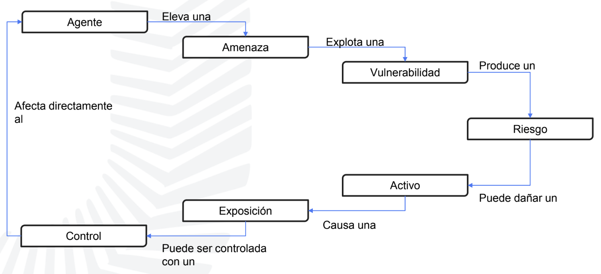 ciclo de control amenaza
Agente:
- Individuo o grupo Que puede llevar a cabo una Amenaza.
Amenaza:
- Presencia de un evento que pueda impactar en forma negativa en una organización.
Vulnerabilidad:
- Ausencia o debilidad de un
Control.
Riesgo:
- Probabilidad de que la amenaza explote una vulnerabilidad causando pérdidas y daños a los activos e impacte en el negocio.
Activo:
- Recurso, producto, proceso, dato o todo aquello que tenga valor para el negocio de la organización.
Control:
- Tiene la función de reducir el riesgo asociado con una amenaza o grupo de amenazas.
Controles de seguridad
-
Reducción de los efectos producidos por las amenazas de seguridad y vulnerabilidades a un nivel tolerable pro la organización.
-
Clasificación:
- Por momento de acción:
- Preventivos
- Detectivos
- Correctivos
- Por modo de acción:
- Físicos
- Técnicos
- Administrativos
- Por momento de acción:
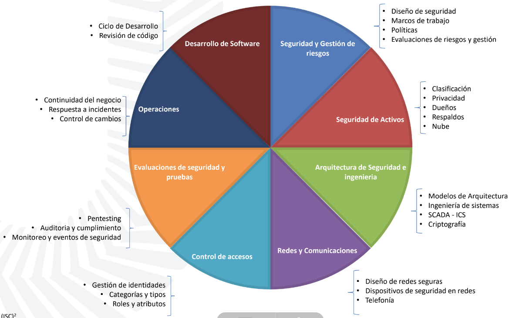 areas de aplicación de ciberseguridad
Roles y responsabilidades
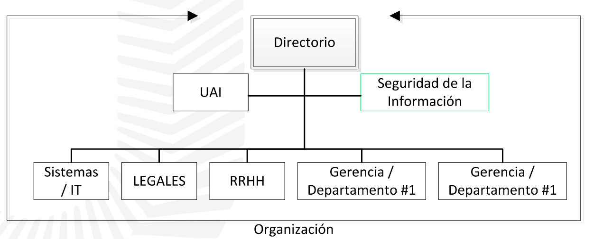 diagrama gerarquico de la organización
Otros términos comunes:
Gerencia general / directorio:
- Responsable final por la seguridad de la información.
CISO (Chief information security officer):
- Responsable funcional por la seguridad de la información.
CSO (Chief security officer):
- Responsable último de la seguridad de la información.
*(COO, CTO, CIO, CEO, BISO)
Dueño (Owner):
- Determina el nivel de clasificación de la información.
Custodio:
- Preserva la Confidencialidad, Integridad y Disponibilidad de la información.
Auditor:
- Evalúa los controles de seguridad y presenta recomendaciones a la Gerencia General / Alta gerencia / Directorio.
Actividades
- Generalidades área de seguridad 01
- Generalidades área de seguridad 02
- Política de seguridad VPN proveedores
Actividad 1. Generalidades área de seguridad
- Identificar la posición (organigrama) del área de seguridad en la organización en la que trabajan / o seleccionar alguna organización.
- Identificar ventajas y desventajas de dicha ubicación.
- Identificar cantidad aproximada de personas dentro del área y tipo de perfiles
Actividad 2. Generalidades área de seguridad
- ¿Por qué resulta de vital importancia contar con el apoyo del directorio de una organización para el área de seguridad?
- ¿Si tuviera que crear un área de seguridad, que perfiles consideraría incorporar?
- ¿Qué principio de la triada se ve comprometido en caso de una infección con el ransomware Petya?
Lectura complementaria
- Bowen P, Hash J, Wilson M. (2006). Information Security Handbook
- ISACA, (2012). COBIT 5 - Framework, ISACA Madrid chapter.
- Shon Harris, (2013). CISSP All in one - Sixth Edition - McGrawHill. ISBN: 978-0-07-178173-2
Seguridad y gestión de riesgos
Incluye:
- Diseño de seguridad
- Marcos de trabajo
- Políticas
- Evaluaciones de riesgos y gestión
Marco normativo:
Estructura:
(por orden gerárquico)
- Política
- Norma
- Estándar técnico de seguridad / Estandar de arquitectura
- Procedimiento
- Instructivo
- Recomendaciones
Todas estas secciones están regidas e influenciadas por
Leyes Regulaciones Requerimientos
Definiciones
Política:
- Presentan directivas de la alta gerencia.
- Define la filosofía organizacional de seguridad.
- Independiente de la tecnología.
- Define responsabilidades y autoridades para la implementación de seguridad.
Norma:
- Define reglas concretas y que se adecúan a la
políticaasociada
Estándar Técnico de Seguridad:
- Define un conjunto de parámetros de segridad, que deben ser configurados en cada plataforma a fín de brindar un marco de funcionamiento confiable.
Estándar de Arquitectura:
- Consiste de un conjnto de definiciones técnicas, que deben ser consideradas en relación a la adquisiición, configuración e implementación de plataformas de tecnología.
Procedimiento:
- Detalla los cursos de acción y tareas que se deben realizar para cmplir con las definiciones establecidas.
- Contiene los pasos a seguir, la figura responsable y los puntos de control para llevar a cabo el procedimiento.
- Facilita el entendimiento y control del curso de acción.
Instructivo:
- Documento dirigido al usuario.
- Especifica intrucciones.
- Explcia en forma detallada, cada uno de los pasos que componen cada actividad.
Recomendaciones / Comunicaciones:
- Comunicado dirigido a todos los usuarios.
- Recomendaciones o consejos para lograr la efectiva protección de la información.
Puntos clave:
- El
necociodetermina la política de seguridad de la información. Y NO al revés. - Todos los usuarios deben conocer, firmar y llevar adelante la
política. - Concientización permanente para incorporar las buenas prácticas implementadas.
- Definir caminos: Seleccionar entre
Políticas extensasoManual de seguridad - Desafío: Considerar al usuario un aliado.
Gestión de riesgo
Riesgo:
Se define en función de la PROBABILIDAD de que una AMENAZA explote una VULNERABILIDAD y el impacto (magnitud del daño) de este evento sobre la organización.
Para estimar la probabilidad de ocurrencia de un evento es necesario analizar las AMENAZAS y VULNERABILIDADES que afectan al ACTIVO.
El Triple:
La combinación de ACTIVO, AMENAZA y VULNERABILIDAD conforman lo que se conoce como el TRIPLE en seguridad informática.
Gestión de riesgo
Administración de riesgos:
- Es un proceso de
Identificación,AnálisisyDeterminaciónde riesgos. - Su principal objetivo es mitigar el riesgo. Es decir, reducir el riesgo a un nivel tolerable/aceptable para la organización.
Análisis de riesgos:
- El análisis de riesgos comprende la identificación, y evaluación de
AMENAZASyVULNERABILIDADESque afectan a los activos de una organización, estimando el riesgo al que se encuentran expuestos dichos activos.
Ciclo de gestión del riesgo:
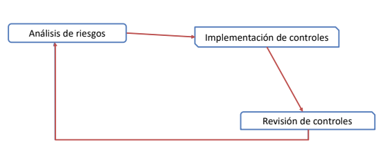
Etapas de análisis de riesgo
- Identificación y evaluación de los activos
- Identificación y análisis de amenazas
- Identificación y análisis de vulnerabilidades
- Evaluación del riesgo
- Recomendaciones de control
- Documentación de resultados
Identificación y evaluación de los activos
Se busca identificar las características relevantes de los ACTIVOS, por ejemplo en caso de un sistema: misión, funciones, topología de la red, si con políticas de seguridad implementadas, arquitectura, la seguridad física, el flujo de información que maneja como así también los componentes que permiten su funcionamento (Hardware, software, interfaces, usuarios)
Método de recolección:
- Entrevistas
- Formularios
- Revisión de documentación.
- Herramientas automáticas.
Identificación y análisis de amenazas
Se identifican las fuentes de amenazas potenciales que podrían afectar a cada uno de los activos.
Las AMENAZAS pueden ser accidentales o intencionales y se clasifican como:
Naturales: Inundaciones, terremotos, tornados, avalanchas, tormentas eléctricas, etc...Humanas: Eventos causados u ocasionados por el humano.Ambientales: interrupción prolongada de energía, polución, químicos, incendios, etc...
Por cada AMENAZA identificada se detallan las acciones de esta, los motivos que pueden llevar a la existencia de una amenaza, la capacidad que debe poseer la fuente de la amenaza para llevar a cabo una acción, a fín de identificar la probabilidad de ocurrencia de la amenaza y los controles para mitigarlas
Identificación y análisis de vulnerabilidades
El objetivo de esta etapa es identificar las VULNERABILIDADES de cada uno de los sistemas existentes. Existen diversas formas que permiten esta identificación y podrán ser más exhaustivas como los análisis técnicos o de revisión de documentación por ejemplo.
Evaluación del riesgo
Para la evaluación de riesgo, es posible realizarlo por el método Cuantitativo, o por el método Cualitativo.
Método cuantitativo
Este método permite realizar una evaluación y resultados basados en métricas, cuantificar los parámetros de la tríada (CIA) en términos monetarios. Permite un análisis costo-beneficio de los controles a aplicar y principalmente un seguimiento y evaluación de la gestión de riesgo.
| Nombre | Definición | Fórmula |
|---|---|---|
Factor de exposición (EF) | El EF es el porcentaje de pérdida sobre el valor de un activo en caso de concretarse una amenaza | 0% ≤ EF ≤ 100% |
Expectativa de pérdida individual (SLE) | El SLE es el valor monetario asociado a un evento determinado. Representa la pérdida producida por una amenaza individual | SLE = Valor del activo * EF |
Tasa de ocurrencia anual (ARO) | El ARO representa la frecuencia estimada de ocurrencia de un evento en el perídodo de un año | 0 ≤ ARO ≤ ∞ |
Expectativa de pérdida anualizada (ALE) | El ALE es el pérdida anual producida por una amenaza individual | ALE = SLE * ARO |
Ejemplo:
Activo: Base de datos
Valor: $100.000
Amenaza: Malware
EF: estimado en un 25%
ARO: 2 veces al año
SLE: $100.000 (Valor del activo) * 0.25 (EF) = $25.000
ALE: $25.000 (SLE) * 2 (ARO) = $50.000
Método cualitativo
Este método está orientado a aspectos soft se una organización o a valores intangibles (imgen, mercado, etc), si bien posee un alto nivel de subjetividad (por estar basado en el juicio, experiencia e intuición), permite establecer indicaciones generales de áreas de riesgo significativo.
Probabilidad de ocurrencia:
| Nivel de probabilidad | Definición |
|---|---|
ALTO | La fuente de amenaza (agente) posee alta motivación y suficiente capacidad, o el incidente ha ocurrido frecuentemente en el pasado; y los controles para prevenir que la vulnerabilidad sea explotada no son efectivos. |
MEDIO | La fuente de amenaza (agente) posee motivación y capacidad, o el incidente ha ocurrido en ciertas ocaciones en el pasado; pero los controles existentes serían capacez de prevenir que la vulnerabilidad sea explotada. |
BAJO | La fuente de amenaza (agente) carece motivación o capacidad, o el incidente no ha ocurrido en el pasado o los controles se encuentrane en condiciones de prevenir, o al menos impedir significativamente, que la vulnerabilidad sea explotada. |
Análisis de impácto:
| Nivel de impacto | Definición |
|---|---|
ALTO | La ocurrencia del incidente provoca: 1. Una pérdida económica superior a $...., o 2. La pérdida, divulgación o modificación no autorizada de información de alta criticidad, o 3. Un daño considerable a las actividades, o 4. Un daño considerable a la imagen o reputación, o 5. Perjuicios graves a seres humanos. |
MEDIO | La ocurrencia del incidente provoca: 1. Una pérdida económica superior a $...., o 2. La pérdida, divulgación o modificación no autorizada de información de criticidad media, o 3. Un daño a las actividades, o 4. Un daño a la imagen o reputación, o 5. Perjuicios a seres humanos. |
BAJO | La ocurrencia del incidente provoca: 1. Una pérdida económica superior a $...., o 2. La pérdida, divulgación o modificación no autorizada de información de criticidad baja, o 3. Un daño no significativo a las actividades, o 4. Un no significativo a la imagen o reputación. |
Determinación del riesgo:
| Probabilidad de ocurrencia | Impacto BAJO (10) | Impacto MEDIO (50) | Impacto ALTO (100) |
|---|---|---|---|
ALTO (1,0) | MEDIO 10 x 1.0 = 10 | ALTO 50 x 1.0 = 50 | ALTO 100 x 1.0 = 100 |
MEDIO (0,5) | BAJO 10 x 0.5 = 5 | MEDIO 50 x 0.5 = 25 | ALTO 100 x 0.5 = 50 |
BAJO (0.1) | BAJO 10 x 0.1 = 1 | BAJO 50 x 0.1 = 5 | MEDIO 100 x 0.1 = 10 |
* escala aplicada: ALTO = 50 - 100; MEDIO = 10 - 49; BAJO = 1 - 9.
Recomendaciones de control
Etapa enfocada en recomendar los controles para mitigar o eliminar los riesgos identificados.
Se deben considerar fatores como:
- Factibilidad de implementación
- Efectividad de los controles
- Impacto en la operación a raiz de la implementación de los controles
- Relación costo-beneficio
El riesgo puede:
Reducirse:Aplicando contramedidasTransferirse:Se traslada el riesgo a otra organización (Ej. póliza de seguros)Aceptarse:Se asume la probabilidad de pérdidaEliminarse:Se elimina el elemento de riesgo
Documentación de resultados
Es recomendable efectuar la documentación de cada etapa a medida que las mismas se van desarrollando. Por otro lado, permite generar un reporte con la justificación pertinente, incluyendo las recomendaciones para reducir los riesgos evidenciando el impacto de potenciales amenazas al negocio de la organización.
Gestión de la seguridad - Elaboración de políticas
Marcos de referencia
RFC 2196:
- Establece una serie de componentes que incluyen las políticas de seguridad.
- Objetivos
- Redes y servicios
- Procedimientos
- Auditoría
- Gestión de incidentes
COBIT:
- Gobierno de TI y prácticas de control. Reglamentos de negocio / Documento de seguridad.
- Medidas, normas, procedimientos, reglas para garantizar el nivel de seguridad.
ITIL:
- Gestión de los servicios de TI. Administración de seguridad de la información.
- Objetivos de seguridad de TI con lso objetivos de seguridad del negocio.
- Políticas generales y controles integrados.
- Nivel definido de seguridad de un servicio.
ISO 27000:
- Sistema de gestión de seguridad de la información.
- Política.
- Estructura organizativa.
- Procedimientos.
- Procesos.
- Recursos.
Sistema de gestión de la seguridad de la información
- Disminuye de forma significativa el impacto de los riesgos sin necesidad de realizar grandes inversiones en equipamiento y sin contar con una gran estructura de personal.
- Solo es necesario ordenar la Gestión de la Seguridad y parametrizar la seguridad propia de los sistemas
La seguridad no es un producto, Es un proceso.
La seguridad no se compra, Se gestiona.
Puntos favorables ⬆️
- Disponer de una metodología dedicada a la seguridad.
- Contar con un proceso definido para Evaluar, Implementar, Mantener y Administrar la seguridad de la información.
Formalizar las responsabilidadesoperativas y legales de los usuarios.- Cumplir con disposiciones legales.
- Satisfacer requerimientos de clientes, proveedores y organismos.
- Disponer de una metodología para poder administrar riesgos.
Puntos desfavorables ⬇️
- Resistencia a los cambios.
- Riesgo de que los cambios realizados en un área requieran austes en otras.
- Insuficiente conocimiento del enfoque utilizado.
Roles y responsabilidades.
Lo componen
- Política de seguridad
- Organización de la seguridad de la información
- Gestión de activos
- Seguridad de lso recursos humanos
- Seguridad física y medioambiental
- Gestión de las telecomunicaciones y operaciones
- Control de acceso
- Sistemas de información
- Gestión de incidentes
- Gestión de la continuidad de las operaciones
- Cumplimiento
Controles de seguridad
- Reducción de los efecto producidos por las amenazas de seguridad y vulerabilidades a un nivel Tolerable por la Entidad
Los controles pueden ser:
Preventivos/Detectivos/CorrectivosFísicos/Técnicos/Administrativos
Políticas
Alta gerencia:
Declaración administrativa de alto nivel sobre los objetivos de seguridad de una organización, la responsabilidad individual, organizativa, la ética, los controles y requisitos generales.
Regulatorias:
Políticas altamente detalladas y concisas generalmente exigidas por requisitos estatales, de la industria u otros requisitos legales.
No mandatorias:
No mandatorias, pero muy recomendadas, a menudo con sanciones o consecuencias específicas por incumplimiento
Informativas:
Solo informa, sin requisitos explícitos de cumplimiento
Contenido
- Definiciones de seguridad, objetivos y alcance.
- Responsabilidades.
- Documentación de respaldo.
- Principios o requerimientos a cumplir.
Ejemplo:
Lineamientos:
- La información, en cualquiera de los formatos que se encuentre, se considera como un bien de gran valor para la organización y los Sistemas de Información son activos críticos para la Organización.
- La información debe ser protegida de una manera adecuada a sus sensibilidad.
- La Organización declara su decisión de cumplir con la normativa y legislación vigente en temas de Seguridad de la Información.
- La S.I. es responsabilidad de todos.
- Todo empleado debe acceder exclusivamente a la información que le sea estrictamente necesaria.
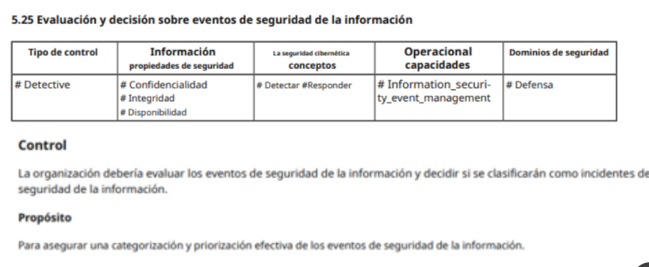 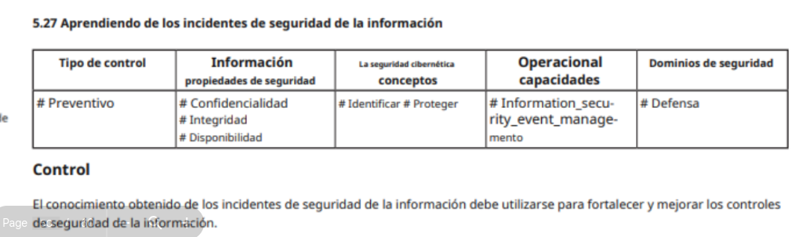 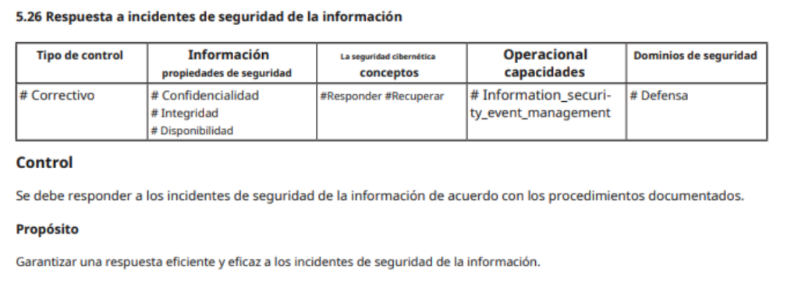 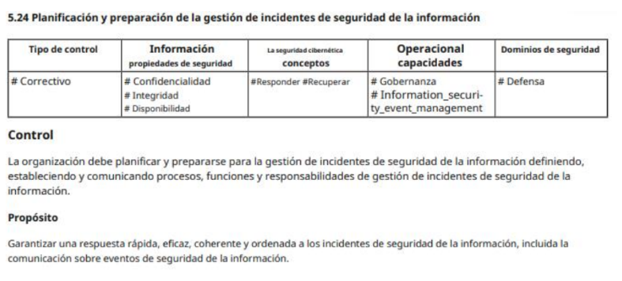
Actividad 3. Política de seguridad VPN proveedores
Considerando que Ud. es el Responsable de Seguridad Informática de la Entidad Alfa, diseñe una Política de Seguridad para el control de acceso remoto de proveedores.
- Recuerde qué generalmente una política incluye:
- Objetivos
- Alcance
- Documentos relacionados
- Definiciones y abreviaturas
- Versionado y control de cambios
- Sobre el acceso remoto y proveedores
- Asignación (criterios)
- Nomenclatura
- Tiempo de vida
- Acceso a recursos
- Perfiles
- Auditoria
Solución:
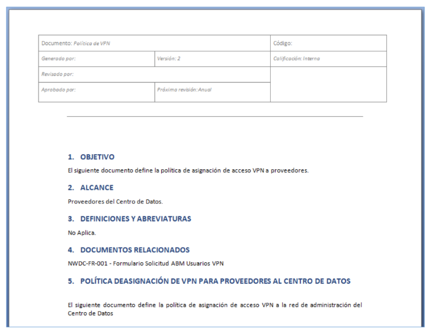 encabezado
¿Alfa a que se dedica? ¿Está regulada? ¿Qué requerimientos internos hay?
Objetivo / Alcance
Documentos relacionados:
- FORM-AccesoRemoto-01.docx
- Pol-SI-001.docx
Definiciones y abreviaturas:
- VPN
- Acceso remoto: la definición,
- MFA
Política de asignación de VPN para proveedores:
- No se brindará acceso VPN a menos que el mismo sea estrictamente necesario
- El acceso VPN será brindado a proveedores que excepcionalmente deban realizar tareas de forma remota durante un periodo acotado y definido expresamente
- La solicitud deberá realizarse formalmente al área de Accesos, permisos y usuarios (Gerencia de SI) y supervisado por el área de GRC
- El acceso VPN será brindado de manera individual al personal proveedor que sea designado para realizar las tareas en forma remota
- No se utilizaran para los accesos VPN cuentas genéricas, sino que deberán estar asociadas a una persona física y fácilmente identificables al proveedor
- Proveedor_InicialNombre_Apellido
- Ext_inicialnombre_Apellido
- Legajo 78788888
- Los permisos de acceso se basaran en perfiles acorde al trabajo a realizar, sosteniendo el principio de mínimo privilegio
- El acceso VPN será brindado a través de la implementación de MFA
- No se brindará acceso a recursos corporativos de ALFA a través de la VPN
- El acceso VPN deberá acotarse a la franja horaria laboral de ALFA, salvo autorización expresa de las Gerencias involucradas. En caso contrario la misma será revocada
- El proveedor no podrá realizar actividades o ejecutar herramientas que comprometan la infraestructura e información de la organización
- La conexión será bloqueada luego de 10 minutos de inactividad
- El acceso se encontrará restringido por zona geográfica, salvo autorización expresa o casos especiales
- El área de SI realizará monitoreos sobre las conexiones a fin de identificar y prevenir actividades maliciosas o sospechosas
- El acceso será otorgado cuando el equipo (host/computadora del proveedor) cumpla con los siguientes requisitos
- Utilizar una imagen homologada por ALFA
- Contar con una solución de antivirus actualizada (no más de 30 días)
- No se permitirán conexiones concurrentes
- Para el proceso de enrolamiento y comunicación de credenciales será realizado de manera presencial. En caso de poder realizarse de esta manera, las mismas serán enviadas en forma cifrada mediante la utilización de llaves públicas-privadas
- Para los casos particulares que no se puedan cumplir con los presentes controles o requieran configuraciones especiales, se realizarán los análisis pertinentes, se documentaran y solicitaran las aprobaciones correspondientes
- Mensualmente el área de Acceso, permisos y usuario realizara un control sobre los usuarios con acceso VPN
- En caso de incumplimiento o de detectarse un mal uso del recurso brindado se procederá a realizar el bloqueo del acceso y se elevará para su estudio
Comité
Conformación:
- Áreas / Gerencias
- Apoyo
Funciones:
- Revisar y proponer al
Directoriopara su consideración y aprobacón las políticas de seguridad. - Monitorear cambios significativos en los riesgos que afectan a los recursos de la información del organismo.
- Promover la difusión y apoyo a la seguridad de la información dentro de la Entidad, como así, coordinar el proceso de administración de la continuidad de las actividades.
Primeros pasos:
-
¿Contamos con el apoyo?
-
¿Cómo se convoca? ¿A quienes?
-
¿Proyectos?
-
Canales de comunicación.
-
Los puntos del orden del día son:
- Constitución del comité de seguridad de la información
- Designación de los integrantes del comité.
- Consideración del borrador del
Plan Maestro de Seguridad. - Definición de objetivos del plan maestro.
Introducción a los dispositivos de seguridad de red
Router
Firewall
IDS/IPS
Firewall con IPS
VPN
🛡️ WAF
🌐 DBF
Anti dDoS
Material de lectura:
- Diseño y Configuración de IPS, IDS y SIEM en Sistemas de Control Industrial – CERTsi
- Network IDS & IPS Deployment Strategies – SANS
- Deploying firepower managed devices – Cisco
- Bro vs Snort or Suricata – Bricata
Soluciones para investigar:
- IDS para redes Wireless: Kismet Wireless https://www.kismetwireless.net/
- Network IDS: Snort https://www.snort.org/ Suricata https://suricata-ids.org Bro https://www.bro.org/
- Host IDS: OSSEC http://www.ossec.net Wazuh http://wazuh.com/ TripwireOpenSource https://github.com/Tripwire
- Proyectos especiales: Security Onion https://securityonion.net/ Prelude https://www.prelude-siem.org/
Introducción a los dispositivos de seguridad de red
Router
Firewall
IDS/IPS
Firewall con IPS
VPN
🛡️ WAF
🌐 DBF
Anti dDoS
Material de lectura:
- Diseño y Configuración de IPS, IDS y SIEM en Sistemas de Control Industrial – CERTsi
- Network IDS & IPS Deployment Strategies – SANS
- Deploying firepower managed devices – Cisco
- Bro vs Snort or Suricata – Bricata
Soluciones para investigar:
- IDS para redes Wireless: Kismet Wireless https://www.kismetwireless.net/
- Network IDS: Snort https://www.snort.org/ Suricata https://suricata-ids.org Bro https://www.bro.org/
- Host IDS: OSSEC http://www.ossec.net Wazuh http://wazuh.com/ TripwireOpenSource https://github.com/Tripwire
- Proyectos especiales: Security Onion https://securityonion.net/ Prelude https://www.prelude-siem.org/
Routers
- Enrutan el tráfico, operan en capa 3 (Capa de red, IP).
- Dividen en dominios de Broadcast.
- Basan su ruteo en tablas de enrutamiento, estáticas o dinámicas.
- Tienen alguna capacidad de firewall.
- Permiten el filtrado del tráfico mediante ACL.
Firewalls (características y soluciones)
Los firewalls son dispositivos que permiten delimitar el perímetro de seguridad de una red.
- Permite implementar reglas de acceso.
- Permite filtrar el tráfico no autorizado.
- Soluciones de hardware.
Clasificación:
- Basados en Filtrado de paquetes
- Basados en Nivel de circuito
- Basados en Aplicación
- Basados en Estado de niveles múltiples
Basados en Filtrado de paquetes
(IP Filters, packet filter)
- Capa 3 (Internet protocol) - Permite o deniega el paso de datagramas según un conjunto de reglas.
- Solo entienden d direcciones IP.
- Comparan los encabezados IP, TCP y UDP para compararlos contra las ACL (Access controls list) configuradas
Ventajas:
- Velocidad.
- Su característica de filtrado se encuentra en otros dispositivos.
Desventajas:
- Limitados en capacidades.
- No detectan paquetes a nivel de aplicación.
- Configuración.
Basados en Nivel de circuito
Circuit level gateway
- Capa 4 (TCP) - monitorea sesiones TCP/IP.
¿¿¿(Capa 5??)??? - Monitorea el intercambio de paquetes para validar una sesión.
- No filtra paquetes individuales sino sesiones.
- La detección se realiza antes de que se establezca la connección.
Ventajas:
- La información parece venir desde el firewall (Cobertra de red interna).
Desventajas:
- Al no filtrar paqetes, una vez establecida la conección se puede aprovechar.
- No se puede monitorear el tráfico.
Basados en Aplicación
Application level gateway / proxy
- Capa 5 (Application) - Aplicacion.
- Permite el filtrado en aplicaciones específicas o de protocolos.
- La inspección se realiza a nivel aplicación, lo que permite filtrar comandos específicos de la aplicación.
Ventajas:
- Gran capacidad de análisis y filtrado.
- Seguimiento de actividad del usuario e inicios de sesión.
Desventajas:
- Rendimiento.
Basados en Estado de niveles múltiples
Statefull multi layer
- Llamados de segunda generación.
- Capas 3, 4 y 5 - Permite seguir el estado de paquetes.
- Mantiene el registro de sesiones activas.
- La inspección de estado se basa en el monitoreo de los paquetes entrantes y salientes, el estado de conección.
Ventajas:
- Gran capacdad de análisis y filtrado.
Desventajas:
- Configuración.
Sistema de prevensión de intruciones (IPS)
Los IDS (Intrussion detection system) ya estan en desuso, reemplazaods por los IPSs, que pueden configurarse para que solo ejecuten detección.
- Su funcionamiento se basa en análisis de tráfico.
- Permiten identificar patrones.
- Pasivos (IDS) o activos (IPS)
- Toman medidas correctivas ante la detección de una intrusión.
- Soluciones de hardware o software.
- Arquitectura basada en agentes.
Clasificación:
Arquitectura:
- si bien cada solución implementa su arquitectura de manera diferente, a grandes razgos podemos definir:
- Fuente de datos
- Reglas
- Base de firmas
- Filtros
- Detector
- Reportes
- Motor
- Consola
- Sensores
Clasificación según detección
Basados en comparación de firmas:
- Cada paquete es comparado contra una lista de patrones / firmas de paquetes ya conocidos como "peligrosos".
Basados en comportamiento:
- Analizan la actividad en busca de un comportamiento sospechoso comparado contra actividades normales.
Clasificación según implementación
Network-based IDS:
- Monitoreo de red, implementación en diferentes segmentos o puntos de la topología. Generalmente chasis y sensores de interfaz en modo promiscuo.
Host-based IDS:
- Monitoreo de anomalías en un host, modificación de archivos, configuración. Alcance limitado.
Red privada virtual VPN
Las redes privadas virtuales permiten la extensión de la red local a través de una red pública.
- Soluciones por Hardware o Software
- Tunneling (encapsulado de datos) utiliza un protocolo de cifrado.
- Tipos:
- Acceso remoto
- Red a Red (L2L)
- interna o host a host
Firewall de aplicaciones WEB
WAF
Los WAF son dispositivos dedicados exclusivamente a aplicaciones web.
- Permite filtrar el tráfico
- Se posiciona entre la aplicación y el borde.
- Permiten identificar patrones.
- Requiere configuración exhaustiva.
- Soluciones de Hardware o Software.
- Protege contra
XSS,SQLi,CSRF.
Firewall de Bases de datos
DBF
Los DBF son dispositivos dedicados para bases de datos.
- Brinda protección a través de reglas pre-establecidas.
- Analiza las consultas recibidas e identifica comandos o sentencias peligrosas.
- Monitoreo de actividad.
- Entre el servidor con la aplicación web y el servidor de la base de datos.
- Soluciones de Hardware o Software
Información de seguridad y administración de eventos SIEM
security information and event management
Una solucion de administración de seguridad de la información y eventos de seguridad.
- Combina SIM (Security information management) y SEM (Security events management).
- Recopila, relaciona y analiza datos de fuentes varias para identificar posibles amenazas.
- Incluye acciones como respuesta a incidentes.
- Las fuentes de información para el SIEM pueden ser los logs de todos los dispositivos de la red.
Diseño de redes
El diseño de redes seguras, es el proceso de diseñar redes considerando las posibles amenazas a las que se verías expuestas y las contramedidas a adoptar.
Partimos de un objetivo en donde se pretende lograr un deploy que sea escalable y sostenible, esto requiere un diseño acorde, considerando los riesgos y sosteniendo los principios de seguridad.
La defensa en profundidad:
- Protección en capas
- Defensa en múltiples lugares
- Diversificación (
??)
se necesita un análisis, utilizar una metodología, hacer uso de buenas prácticas.
Conceptos:
- Modelos
OSIyTCP/IP
Conectividad y potenciales amenazas
Evaluar:
-
¿Existe necesidad de conección?- Consumir servicios externos.
- Proveer servicios propios.
- Acceso a la información.
-
¿Cuales son los problemas de 'estar' online?- Potenciales ataques externos.
- Control de tráfico.
- Disponibilidad de servicios de conectividad.
Administración de la red
La administración de una red es una actividad altamente técnica.
El modelo iso de red propone 5 categorías:
- Gestión de
Fallos - Gestión de
Rendimiento - Gestión de
Configuración - Gestión de
Contabilidad - Gestión de
Seguridad
Las soluciones de control de red están diseñadas para la resolución de problemas y la evaluación de rendimiento (con enfoque para el personal de redes), pero también pueden proporcionar información útil, patrones y tendencias por motivos de seguridad.
Control de acceso
Los mecanismos de control de acceso son cruciales para la seguridad de la red.
Los controles de acceso permiten limitar quien puede iniciar sesión, que recursos están disponibles, que puede hacer cada usuario con estos recursos, cuando y desde donde esta disponible el acceso.
La implementación de un buen control de acceso será acorde a la estrecha vinculación entre: administradores de red, seguridad y dueños del sistema.
Los controles de seguridad del usuario determinan como, cuando y donde los usuarios obtendrán acceso al sistema.
La configuración de perfiles de seguridad del usuario generalmente incluye las siguientes tareas:
- Asignar seguridad de grupo.
- Configuración de usuarios especiales.
- Configuración de seguridad de contraseña:
CaducidadLongitud- etc...
- Configuración de log-in/out
- Configuración de seguridad de
directoriosyarchivos - Configuración de acceso a recursos (ej. Impresoras, ...)
Consideraciones del diseño de red
Isolado, separación y compartimentalización:
Con el isolado o aislamiento, la separación y compartimentalización, se busca asegurar que ante un incidente (falla, compromiso) en una parte del sistema, este quede reducido solo a esa porción de la red. Evitando fallas en otras partes o una progresión del compromiso.
Políticas:
La aplicación de políticas brinda la capacidad de aplicar el comportamiento permitido entre los sistemas conectados, las aplicaciones, los usuarios, las redes y subredes. El ejemplo más claro es el establecimiento de ACL (Access control lists).
Identidad y confianza:
Cuando nos referimos a identidad, nos referimos a la capacidad de un sistema para identificar a las entidades que acceden a un recurso. Se configura también un nivel de confianza otorgado a cada entidad según la necesidad (mínimo privilegio).
Instrumentación y monitoreo:
Se refiere a la capacidad de supervisar el comportamiento y uso de la red (sus recursos, sistemas, usuarios, tráfico), desarrollando la capacidad de detectar cualquier evento de seguridad.
Correlación:
Es la capacidad de vincular los eventos detectados en la red. Permite interpretar, analizar y clasificar la información obtenida del monitoreo. Por medio de ella se pueden contextualizar los eventos, determinar un escenario o situación dada. Cuanto mejor sea la calidad del monitoreo (no cantidad), mejor será la capacidad de acción.
Resiliencia:
Es la capacidad de recuperación posterior a un incidente. Indica la madurez de una arquitectura para volver a un estado de operatividad ante situaciones anómalas, no controladas o inseperadas. Ej: redundancia, disponibilidad, capacidad operativa, planes de contigencia, respuesta a incidentes, etc
Proceso de diseño de una red
El proceso de diseño consiste en la evaluación de soluciones, fabricantes, equipamiento y proveedores para poder realizar el layout de la red.
Es un proceso de ingeniería:
- Definir el problema
- Establecer y gestionar expectativas
- Identificar escenario actual (red existente, limitaciones, sistemas, etc)
- Analizar la información
- Elaborar escenarios posibles
- Evaluar y optimizar los escenarios
- Selección de escenarios
- Planificación e implementación
Diseño de arquitectura:
- Determinar la topología
- Determinar la tecnología
- Tipo/clases de equipamiento
- El desarrollo de material de soporte (diagramas de alto y bajo nivel)
- Relaciones de arquitectura:
- Ruteo y direccionamiento: Provee conectividad robusta y flexible entre elementos.
- Seguridad: Restringe el acceso no autorizado, uso y visibilidad dentro de la red para reducir las amenazas y efecto de los ataques.
- Gestión de la red: Provee monitores, configuracion y resolucion de problemas para la red
- Performance: Provee recursos para soportar requerimientos de capacidad, delays, RMA
Diseño de red nivel NINJA
Simplicidad:
- Mantener un diseño simple.
- Buenas prácticas vs. prácticas realistas.
- Evitar la exageración del uso y creación de subredes.
Estandarizar:
- Estandarizar soluciones.
- Diseños de VLANs.
- Subneteo.
- Templates de
ACL(Access controls lists).
Monitorear:
- ¿Qué monitorear?
- Visibilidad (ES IMPORTANTE!!)
- Alertas.
Documentar:
- Diagramas.
- Config.
- Etc...
La nube
Algunas características:
AutoservicioRecursos compartidosEscalabilidadDisponibilidadResponsabilidad
Clasificaciones:
-
Por configuración:
- Privada
- Pública
-
Por tipo de servicio:
SaaS (Software as a service): capacidad de utilizar aplicaciones del proveedor.PaaS (Platform as a service): capacidad de desarrollar o desplegar aplicaciones utilizando la plataforma, sin oportunidad de manejo de sistema operativo, redes y almacenamiento; estos son gestionados por al proveedor.IaaS (Infraestructure as a service): capacidad de procesamiento, almacenamiento, redes y otros recursos, el mantenimiento de SO, sistemas de base de datos etc, esta a cargo de quien contrata el servicio y no del proveedor.b
Diagrama de responsabilidades:

Diseño de entornos virtuales
Consideraciones de entornos virtuales:
- Segmentación de la red.
- Separar
Hostsvirtualizados. - Uso de los
Virtual switches. - Uso de los
Virtual firewalls. - Aplicar VLAN en la red virtual.
- Separar
- Asegurar la disponibilidad y redundancia.
- Monitoreo del tráfico de las VMs
- Seguridad
- Gestión de la red.
- Performance.
Modelado de amenazas
CIA $ STRIDE:
CIA:
Una técnica rápida para analizar una arquitectura es utilizar la tríada de seguridad (Confidencialidad, Integridad, Disponibilidad), de esta manera se observa cada uno de los componentes de la arquitectura, la necesidad de negocio, el funcionamiento del sistema y la topología; y evaluar si se aseguran cada uno de los principios de la tríada.
STRIDE:
Es un modelado de amenazas desarrollado para la identificación de amenazas. Es utilizado en desarrollo de software y consiste en descomponer una arquitectura en componentes, y analizar cada uno de estos contra el conjunto de amenazas STRIDE.
| Amenaza | Propiedad deseada |
|---|---|
Spoofing | Autenticidad |
Tapering | Integridad |
Repudy | No repudio |
Information disclosure | Confidencialidad |
Denial of service | Disponibilidad |
Elevation of privileges | Autorización |
*Lectura sugerida: "A STRIDE-based Security Architechture for Software-Defined Networking - Fabian Ruffy."
Contenedores
Un Contenedor de software es un método en el que, sobre el núcleo del sistema operativo se ejecuta una capa de virtualización. Utiliza las system-call y no una emulación completa como por ejemplo en la paravirtualización o virtualización de hardware, estos últimos utilizan hipervisores, mientras que la containerización no.
Descripción:
- Arquitectura cliente-servidor(docker engine):
- Servidor (docker-daemon)
- API Rest
- Cliente (CLI)
- Imagen:
- Plantilla (template) que es utilizada para crear contenedores.
- Contenedor:
- Instancia de imagen que se ejecuta de manera aislada, tiene un ambiente y conunto de procesos propio.
- Registros (Docker registry):
- Almacenan las imágenes (docker hub)
- Repositorio de imágenes?
- Red:
- Genera una red propia que puede vincularse o no con la máquina host y entre los diferentes contenedores.
- Almacenamiento:
- Puede generarse persistencia de datos con la utilización de volúmenes.
Buenas prácticas:
- Host:
- Estructura de almacenamiento.
- Permisos de usuarios y grupos (quien tiene acceso al daemon de docker)
- Registros (logs)
- Daemon:
- Tráfico
- Registros (logs)
- Contenedor:
- Aplicaciones como mínimo privilegio.
- Registros (Docker registries) seguros.
- Seguridad de las imágenes.
- Entre otros:
- Eliminar permisos de setuid y setgid (en dockerfile)
- Restringir permisos de Linux en contenedores
- Restringir protocolos
- Restringir puertos
- Limitar el uso de recursos
- Asegurar Docker Socket
- Implementar el uso de TLS
- Kernel capabilities, restringir según su uso
- Restringir SystemCalls (Seccomp)
- DAC vs MAC (Selinux, AppArmor)
- User namespace remaping
Evaluaciones de seguridad
Intentos de Penetración
proyectos de intentos de penetración internos, externos y análisis de vulnerabilidades.
Motivos por lso cuales se lleva a cabo un pentest:
CumplimientoEvaluación de controles de seguridad:- Análisis de vulnerabilidades
- Test de intrusión
- Ejercicios de redteam
Puesta en producción
Test de intrusión:
Wikipedia: "Es un ataque a un sistema informático con la intención de encontrar las debilidades de seguridad y todo lo que podría tener acceso a ella, su funcionalidad y datos"
OSSTMM (open source security testing methodology manual): "Prueba de seguridad con un objetivo específico, que termina cuando el objetivo se alcanza o se acaba el tiempo disponible."
NIST (national institute for standards and technology): "Prueba de seguridad donde se simulan ataques reales para subvertir las funciones de seguridad de un aplicativo, sistema o red."
Otros: Metodologías y conjunto de pruebas que permiten conocer el estado de situación de las medidas de seguridad adoptadas.
Tipos:
-
Caja Negra: No se recibe información previa sobre el objetivo, simulan un escenario real donde el atacante no tiene acceso a información del objetivo.
-
Caja Blanca: Se recibe información previa sobre el objetivo, como documentación, código fuente, credenciales.
-
Caja Gris: Se recibe información parcial, como usuarios, segmentos de IP, funcionalidad general.
Planificación y metodología
Que NO hace un proyecto de este tipo:
- Conseguir todas las vulnerabilidades.
- Atacar todas las vulnerabilidades.
- Corregir las vulnerabilidades.
Que NO hace un pentester:
- No respetar el alcance.
- Actuar de forma no ética.
- No reportar hallazgos.
- No cumplir con leyes
Planificación
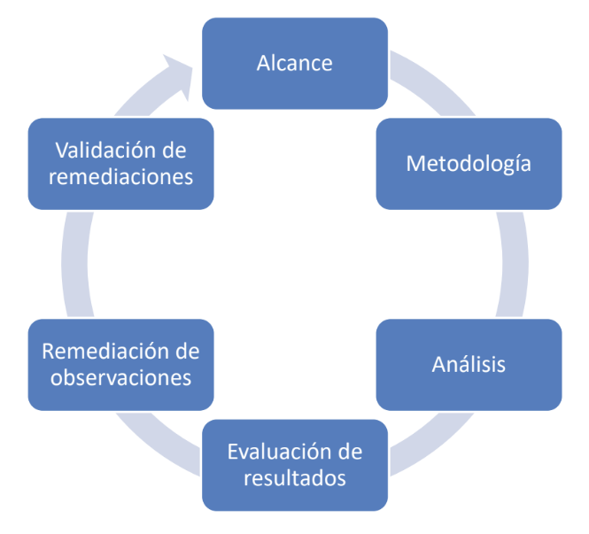
Etapa de recolección de información pública:
- Permite evaluar el nivel de visibilidad desde el exterior.
- Comprender el core del objetivo (negocio, activos más valiosos, impacto posible).
- Delimitar las áreas de evaluación.
- Es la búsqueda de toda información relacionada con el objetivo.
Ejemplos y procedimientos:
- Dirección física
- Números telefónicos
- Nombres de personas, empleados y cuentas de correo
- Información de la empresa
- Proveedores
- Nombres de dominio
- Rangos de direcciones de IP, ISP
- Aplicaciones publicadas
- Metadatos
- Identificación de sistemas activos
- Barrido de puertos
- Identificación de servicios
- Identificación de sistemas operativos
- Mapeo y delimitación:
- Equipos de networking
- Firewalls y VPN
- Servidores de correo, DB, Web, etc...
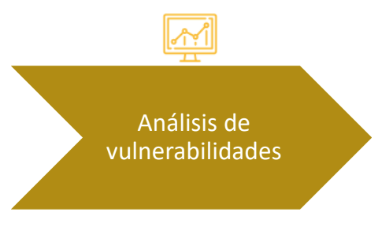
Etapa de análisis de los datos encontrados para la detección y determinación de vulnerabilidades.
- Análisis funcionales para la detección de vulnerabilidades en los procesos.
- Vulnerabilidad técnica, vulnerabilidad funcional
- Automático / Manual
Ejemplos y procedimientos:
- Elaborar un plan de pruebas
- Buscar en bases de conocimiento las vulnerabilidades asociadas (CVE / CVSS)
- Evaluación del nivel de seguridad y vulnerabilidades
- Enumeración de usuarios
- Datos de configuración
- Instalaciones Demo, o por defecto
- Esquemas de autenticación y control de acceso
- Web:
- Documentación
- Configuración
- Análisis técnico
- Manejo de datos y errores
- Concurrencia, navegación.
Ejemplo
Activo: Datos de clientesVulnerabilidad: SQL injectionAmenaza: Robo de información (information disclosure)
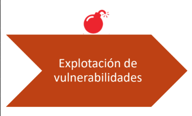
Etapa de explotación de las vulnerabilidades encontradas
- Explotación controlada
- Consolidación en los sistemas
- Denegación de servicio / Ejecución de código arbitratrio.
Ejemplos y procedimientos:
- Elaborar un plan de pruebas
- Coordinado o no con el equipo según acuerdo (horarios de ataque, tipos de ataque permitidos)
- Ataques del lado del servidor
- Ataques del lado del cliente
- Consolidación:
- Elevación de privilegios
- Detección
Etapa de consolidacióon de información y elaboración de los documentos entregables
- Informe ejecutivo (alto nivel, repercución económica, discurso adaptado a nivel gerárquico de la empresa)
- Informe técnico
Ejemplos y procedimientos:
- Claridad y objetividad
- Bitácora - reportes
- Fortalezas -debilidades
- Diagnóstico - recomendaciones
- Gráficos de apoyo
- Evidencia
- Descripción
- Criticidad
- Recomendación / remediación
Control de accesos
Es la habilidad de sollo permitir acceso a un recurso solo a aquellas entidades debidamente autorizadas.
Es el otorgamiento o denegación de permisos de acceso a un recurso en base a un modelo de seguridad determinado.
Es un conjunto completo de procesos ejecutados por hardware, software y administradores, para monitorear accesos, identificar usuarios requirientes de accesos, registrar intentos de acceso, y otorgar o denegar accesos de acuerdo a reglas predeterminadas.
Objetivos:
Respecto de los datos:
- Proteger
divulgación,modificaciónycopiadono autorizado.
Respecto de los sistemas:
- Proteger
uso,modificaciónydenegación de serviciosno autorizados.
Regla del mínimo privilegio:
- Cualquier objeto (Usuario, administrador, aplicación o sistema) debe tener el
mínimo privilegio necesario y posible, para realizar sus tareas específicas. - Tiene el objetivo de reducir la
superficie de ataque y el daño que se pueda ocacionar., al reducir la superficie de ataque se logra un mayor control.
Tipos de control de accesos
Control administrativo:
- Políticas y procedimientos
- Concientización de seguridad, entrenamientos
- Background check
- Clasificación de la información
Control lógico-técnico:
- Restricción de acceso a los sistemas
- Protección de la información
- Sistemas de cifrado
- ACL (Access control lists)
- IDS/IPS (Intrusion detection/prevention systems)
- Antivirus
- Contraseñas
- Smart cards
- Sistemas de control de accesos
Control físico:
- Seguridad perimetral
- Separación de tareas
- Backups
- Guardias
- Detectores de movimiento
- Puertas trampa, molinetes
- Cerraduras
- Biometría
- Gabinetes de seguridad
- Matafuegos
- Zonas seguras
- CCTV videovigilancia
- Alarmas
Clasificación por momento de acción
Controles de accesos PREVENTIVOS:
Implementados para detener una actividad no autorizada antes que la misma ocurra.
Controles de accesos DETECTIVOS:
Implementados para descubrir una actividad no autorizada cuando la misma ocurra.
Controles de accesos CORRECTIVOS:
Implementados para restaurar un sistema luego de que un evento ocurra.
Disuasivos:
Desalientan una violación de seguridad
Recuperación:
Usados para restaurar recursos y capacidades (¿Correntivo?)
Compensatorios:
Brindan alternativas a otros tipos de controles, abordan una vulnerabilidad en forma indirecta.
Combinación de controles:
| tipo | Preventivo | Detectivo | Correctivo |
|---|---|---|---|
| Administrativo | 1. Políticas de seguridad; 2. Separación de tareas; 3. Concientización; 4. Procedimiento de reclutamiento | 1. Monitoreo y supervisión; 2. Investigaciones. | 1. Procedimientos de recuperación ante incidentes; 2. Continuidad de negocio |
| Técnico-lógico | 1. Antivirus; 2. Sistemas biométricos | 1. IDS; 2. Antivirus; | 1. Antivirus; 2. Backups; |
| Físico | 1. Guardias; 2. Sistemas biométricos; | 1. Detectores de movimiento; 2. Detectores de humo; | 1. Rociadores; 2. UPS; |
Privacidad y control de accesos
- Expectativas de privacidad
- Políticas
- Monitoreo de la actividad digital de los usuarios, tráfico, correos.
- Identificación y comunicación del nivel de privacidad y monitoreo al que se está exponiendo.
Modelos de control de accesos
- Discreto (DAC)
- Mandatorio (MAC)
- Modelos no discretos
- Modelos formales: Biba, Clarck/Wilson, Bell/LaPadula
Problemas de los modelos:
- Basados en infraestructuras estáticas
- Políticas restringidas
- Sistemas corporativos, organizaciones y su dinámica
- Amenazas
Identificación, Autenticación, Autorización
Identificación:
- Es el acto de proveer credenciales que permitan identificar la
IDENTIDADde un sujeto.
Autenticación:
- Es el acto de comprobación de las credenciales recibidas con el objetivo de
DETERMINARsi el sujeto es quien dice ser.
Autorización:
- Es el acto de deteminar los
permisos de accesode un sujeto identificado y autenticado sobre un objeto.
Técnicas de identificación y autenticación:
- Tipo 1: Algo que conoces
- Tipo 2: Algo que tienes
- Tipo 3: Algo que eres (físicamente)
* Autenticación de 2 factores (2FA) refiere a la utilización de dos tipos de factor identificadores para la realización de la autenticación.
Algo que conoces (tipo 1):
- Caso ideal: "One time password"
- Contraseña estática: aquella que se mantiene durante cada sesión de logon.
- Contraseña dinámica: aquella que cambia cada vez que el usuario se identifica
- Passphrase: secuencia de caracteres, usualmente de mayor longitud de la permitida para una contraseña. Esta passphrase se utiliza para determinar una contraseña virtual.
Algo que tienes (tipo 2):
- Tokens
- Smart cards
- Llaves
- etc...
Algo que eres (tipo 3):
- Sistemas biométricos:
Método automatizado de identificación o autenticación de un sujeto vivo basado en espectos físiológicos o de comportamiento
- Tipos:
- Huellas dactilares
- Retina
- Iris
- Cara
- Geometría de la mano
- Voz
- Dinámica de la firma a mano alzada
- Ventajas:
- No pueden ser prestados como una llave o token
- No se pueden olvidar
- Buena relación entre usabilidad, costo y presición
- Poco esfuerzo para autenticar e identificar al usuario
- Alta fiabilidad para identificar a los usuarios correctamente sin errores
- Duran para "siempre"...
- Desventajas:
- Adquisición
- Rechazo
- Privacidad:
- Seguimiento y vigilancia: Permiten seguir y vigilar los movimientos de una persona a lo largo del día.
- Anonimicidad: Si la identificación esta asociada a una BBDD se pierde mucha anonimicidad.
- Profiling: Recopilación de datos acerca de transacciones realizadas pro un individuo en particular, permite definir un perfil de las preferencias, afiliaciones y creencias del individuo.
- Tipos:
Factores:
| Tipo | Pro | Contra |
|---|---|---|
Algo que conoces | 1. Barato; 2. Fácil de implementar; | 1. Fácil de adivinar;2. Sniffers y diccionarios; 3. Usuarios; |
Algo que tienes | 1. Dificil de atacar; | 1. Puede perderse o robarse;2. Caro para implementar; |
Algo que eres | 1. Portable; 2. Fácil de utilizar; | 1. Caro para implementar;2. Rechazo del usuario; 3. Tasas de error; |
Desarrollo de software
Buenas Prácticas de Seguridad para el Ciclo de Desarrollo
Premisa principal:
La aplicación VA A SER ATACADA algún ataque FUNCIONARÁ
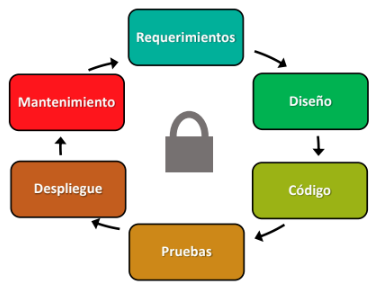
Seguridad durante el análisis de requerimientos
- Información de los usuarios => Requerimientos de privacidad
- Riesgos innecesarios => Requerimientos arbitrarios
- ¿Qué estamos defendiendo? => Clasificación de activos
- ¿Qué nos pueden hacer? => Casos de abuso
- ¿Cómo nos defendemos? => Requerimientos de seguridad
- ¿Que llegamos a hacer? => Priorización de requerimientos
Principios para un diseño seguro:
- Superficie de ataque
- Seguridad por defecto
- Mínimo privilegio
- Diseñar para mantener
- Mantener usabilidad
- Separar responsabilidades
- El eslabón má débil
- Diseño sin secretos (No security by obscurity)
- Defensa en profundidad
-
Modelado de amenazas: "Ayuda aprevenir vulnerabilidades y elegir controles de seguridad antes de empezar a escribir código"
- A nivel de diseño
- A nivel de arquitectura
Prinsipios para la seguridad del código:
- Controles en en servidor (validaciones, no en cliente)
- Criterio de lista blanca
- Validar Todo input
- Escapar Todo output
- Unificar código y controles
- Cifrar info de usuarios
- Autorización para todo
- Verificar componentes
- Control de sesiones
- Carga de archivos
- Sacart backdoors
- Integridad d código
Durante la implementación:
- Seguridad de herramientas
- Mantenibilidad y seguridad
- Control de versiones
- Seguimiento de bugs
- Prudencia al confiar
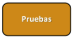
Etapa de pruebas:
- Comienzo temprano de las pruebas
- Revisión de cóidigo entre pares
- Análisis estático: IDE / Intérprete / Framework
- Pruebas de penetración
- Auditorías de código
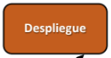
Etapa de Despliegue (puesta en producción):
- Segregación de ambientes DEV / TEST / PROD
-
Hardenizado de equipos:
- Quitar componentes innecesarios
- Configurar bien los necesarios
- Agregar módulos de seguridad
- Instalar actualizaciones
- Documentar la configuración
- Activar cifrado
- Virtualización y contenedores
- Cambiar contraseñas por defecto
Etapa de Mantenimiento:
- Herramientas de seguridad
- Reporte de vulnerabilidades
- Ventana de vulnerabilidad
- Actualizaciones
- Protocolo de backups
- Controles de integridad
-
Fín de vida útil:
- Migración
- Descarte
Resumenes
Modelo de Política de Seguridad de la Información para Organismos de la Administración Pública Nacional (APN)
Objetivo
El objetivo de la política es garantizar la confidencialidad, integridad y disponibilidad de la información en los organismos de la Administración Pública Nacional, asegurando que los datos estén protegidos contra accesos no autorizados, alteraciones o pérdidas.
Principios Generales
-
Responsabilidad y Gobernanza:
- Cada organismo debe designar un responsable de la seguridad de la información.
- Se deben definir roles y responsabilidades claros para la implementación de las políticas de seguridad.
-
Gestión de Riesgos:
- Identificar y gestionar los riesgos asociados a la información que maneja cada organismo.
- Desarrollar e implementar un proceso continuo de análisis de riesgos y controles.
-
Clasificación de la Información:
- Clasificar la información en categorías según su nivel de sensibilidad:
- Pública.
- Confidencial.
- Secreta.
- Establecer medidas de protección adecuadas a cada nivel de clasificación.
- Clasificar la información en categorías según su nivel de sensibilidad:
-
Control de Acceso:
- Implementar controles de acceso basados en el principio de necesidad de conocer.
- Asignar derechos de acceso a usuarios según sus funciones y responsabilidades.
- Revisar periódicamente los privilegios de acceso.
-
Protección de los Datos:
- Asegurar la integridad, confidencialidad y disponibilidad de los datos en todas sus fases (almacenamiento, transmisión y procesamiento).
- Implementar mecanismos de cifrado, control de acceso y copias de seguridad.
-
Gestión de Incidentes de Seguridad:
- Definir procedimientos para la detección, respuesta y resolución de incidentes de seguridad.
- Mantener registros de incidentes y realizar análisis de las causas para mejorar las defensas.
-
Capacitación y Concientización:
- Proveer formación continua a todo el personal para asegurar que comprendan las políticas y procedimientos de seguridad.
- Desarrollar programas de concientización sobre la importancia de la seguridad de la información.
Cumplimiento
Todos los organismos deben implementar estas políticas y garantizar su cumplimiento mediante auditorías regulares y revisiones periódicas.
Estructura de Implementación
-
Marco Normativo:
- La política se alinea con normativas nacionales e internacionales sobre seguridad de la información.
-
Supervisión y Monitoreo:
- Se requiere un monitoreo constante del cumplimiento de la política y de las medidas de seguridad adoptadas.
-
Mejora Continua:
- Se fomenta la revisión y actualización constante de las políticas y procedimientos de seguridad para adaptarse a nuevas amenazas y tecnologías.
Anexos
- Procedimientos específicos y recomendaciones técnicas para la implementación de la política.